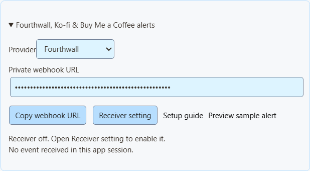
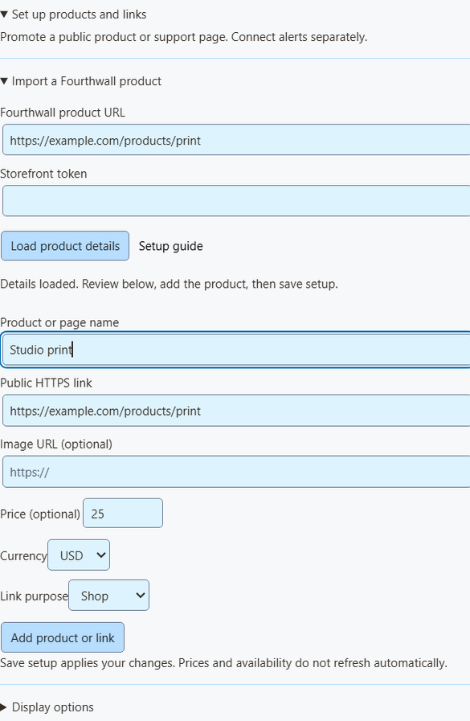

5단계로 알림 연결하기
- 열기 Monetization → Fourthwall, Ko-fi & Buy Me a Coffee alerts 에서 자신의 항목을 선택하세요: 제공업체.
- 클릭: 수신기 설정 에서 다음을 켜세요: 확장 프로그램 원격 API 제어.
- Monetization으로 돌아가 다음을 클릭하세요: 웹훅 URL 복사.
- 제공업체의 웹훅 설정에 붙여 넣으세요(아래 단계 참고).
- Social Stream Ninja를 계속 실행하세요.

작동하고 있나요? ‘Receiver connected’는 SSN이 수신 대기 중이라는 뜻뿐입니다. 마지막 이벤트 항목은 실제 이벤트가 도착할 때 갱신되고 재시작 시 초기화됩니다.
웹훅 URL을 공개하지 마세요. 이 URL이 알림의 유일한 보호 수단이며 서명 비밀키는 검사하지 않습니다. 알림에는 쓸 수 있지만 상품 발송을 위한 결제 증명으로 쓰지 마세요. 공개하거나 QR 코드에 넣지 마세요.
샘플 알림 미리보기 는 외형만 보여 줍니다. 합계, Event Flow, 웹훅에는 영향을 주지 않습니다.
NinjaBacker, Throne, Amazon, eBay는 다음을 보세요: 수익화 가이드. Shopify는 다음을 보세요: Shopify 설정.
Fourthwall
- Fourthwall에서 다음을 여세요: Settings → For Developers → Webhooks.
- 웹훅을 만들고 SSN의 Fourthwall URL을 붙여 넣으세요.
- 원하는 이벤트를 선택하세요(표 참고).
- 저장하고 SSN을 계속 실행하세요.
| Fourthwall 이벤트 | 표시 유형 |
|---|---|
ORDER_PLACED | 구매입니다. 기존 설정과 맞추기 위해 기부 값도 더합니다. |
GIFT_PURCHASE | 선물입니다. |
DONATION | 기부입니다. |
SUBSCRIPTION_PURCHASED | 새 멤버십입니다. |
기프트 카드 주문은 금액을 두 번 더하지 않습니다. 테스트 이벤트는 건너뜁니다.
Ko-fi
- 열기 Ko-fi Webhooks.
- SSN의 Ko-fi URL을 다음에 붙여 넣으세요: 웹훅 URL 그리고 저장하세요.
- SSN을 계속 실행하세요.
공개 팁, 멤버십, 상점 주문, 의뢰는 이 링크 하나를 사용합니다. 비공개 결제는 제외됩니다. 상점 주문과 의뢰는 구매로 표시되며 기부 합계에 더하지 않습니다. Ko-fi는 취소된 멤버십을 알려 주지 않습니다.
SSN 미리보기로 테스트하세요. Ko-fi 테스트 결제는 실제처럼 보이며 알림, 합계, 작업을 실행할 수 있습니다. 유료 보상이 켜져 있을 때 사용하지 마세요.
Buy Me a Coffee
- 크리에이터 대시보드에서 다음을 여세요: 통합(Integrations) 을 열고 다음을 선택하세요: 새 웹훅(New webhook).
- 이름을 정하고 SSN의 Buy Me a Coffee URL을 붙여 넣으세요.
- 원하는 이벤트를 선택하세요(표 참고).
- 저장하고 전송을 켜 두세요. 실패하면 해당 화면의 전송 기록을 확인하세요.
| 이벤트 | 표시 유형 |
|---|---|
donation.created | 기부입니다. |
extra_purchase.created | 구매입니다. |
commission_order.created | 구매입니다. |
wishlist_payment.created | 선물 모금 참여입니다. |
membership.started | 새 멤버십 안내이며 별도 결제는 아닙니다. |
비공개 메모와 익명 후원자는 계속 숨깁니다. 대시보드 테스트(live_mode: false)는 건너뜁니다. 환불이 합계를 줄이지는 않습니다.
Fourthwall 상품 가져오기
- Fourthwall에서 다음으로 이동하세요: Settings → For Developers 에서 다음을 만드세요: Storefront 토큰. 관리자 API 키를 사용하지 마세요.
- SSN에서 다음을 여세요: Products & support links → Set up products and links → Import a Fourthwall product.
- 상품의 공개 링크와 토큰을 붙여 넣고 다음을 클릭하세요: 상품 세부 정보 불러오기.
- 이름, 이미지, 가격, 링크를 확인하세요. 링크는 토큰과 같은 상점의 것이어야 합니다.
- 용도를 선택하세요: Shop, Gift, Support 또는 Join.
- 클릭: 상품 또는 링크 추가에서 다음을 켜세요: 상품 및 후원 링크를 선택하고 다음을 클릭하세요: 설정 저장.

가져오기 기능의 동작
- 공개되고 판매 가능한 상품을 한 번에 하나씩 불러옵니다.
- 토큰으로 검색할 상점을 정합니다. 한 번 사용한 뒤 지우며 저장하거나 오버레이로 보내지 않습니다.
- 옵션이나 묶음의 가격이 다르면 가격을 비워 둡니다.
- 가져온 시점의 정보입니다. 가격, 재고, 이미지는 자동 갱신되지 않으므로 바뀌면 다시 가져오거나 편집하세요.
- 상품은 최대 20개 저장할 수 있습니다. 같은 것을 다시 추가하면 별도 복사본이 생깁니다.
상품과 QR 코드를 방송에 표시
Shopify, Tiltify, Patreon 등 공개 링크를 수동으로 추가할 수도 있습니다. 이것만으로 결제 알림이 연결되지는 않습니다.
- 다음 항목 아래에서: 대상 OBS 오버레이:에서 다음을 선택하세요: 상품 및 후원 링크.
- 열기 오버레이 링크 옵션 에서 다음을 선택하세요: 오버레이 보기: Product showcase only, Support card only, Activity alerts only 또는 Showcase and alerts.
- 클릭: OBS 링크 복사 를 OBS에 다음 소스로 추가하세요: 브라우저 소스. 800 × 600으로 시작하고 보기마다 소스 하나를 사용하세요.
- 다음 위치에서: 표시 옵션에서 첫 상품을 고정하거나 순환시키고 다음을 켜세요: QR 코드 표시 (Show QR code).
- 최종 OBS 레이아웃을 보면서 휴대전화로 QR 코드를 스캔하세요.

QR 코드를 스캔할 수 없나요? 오버레이를 너무 작게 줄이거나 많이 자르지 마세요. 채팅에 링크를 공유하려면 다음을 클릭하세요: 공개 링크 복사.
알림, multi-alerts, Event Flow
- 쇼케이스는 상품 이미지를 표시하지만 작은 후원 카드는 표시하지 않습니다.
- 활동 알림은 단독으로 작동하며 관계없는 상품의 QR 코드를 표시하지 않습니다.
- Multi-alerts와 활동 피드는 상품 목록 없이도 같은 세션에서 작동합니다. Monetization 활동 보기에는 상품 목록을 켜야 합니다.
- Event Flow의 Donation 트리거는 계속 다음 값이 있는 행을 처리합니다:
hasDonation. 구매나 완료된 선물에는 Event Type을 사용하세요. 참고: 이벤트 매핑.
방송 중 상품을 바꾸거나 시청자 링크 하나를 공유하려면 다음을 보세요: 실시간 상품 제어.
아무것도 나타나지 않을 때
| 문제 | 시도할 방법 |
|---|---|
| 수신 기능이 꺼져 있음 | 켜기: 확장 프로그램 원격 API 제어. 다른 API 스위치는 다른 기능입니다. |
| 연결 끊김 | SSN을 켜 두고 인터넷을 확인하세요. 이는 SSN의 연결 상태이며 제공업체의 상태는 아닙니다. |
| 이벤트를 받지 못함 | 선택한 제공업체, URL, 제공업체의 웹훅 설정을 확인하세요. |
| 이벤트를 건너뜀 | 테스트, 비공개 결제, 미지원 이벤트, 잘못된 금액은 제외합니다. |
| 이벤트는 도착했지만 오버레이가 없음 | 세션, 비밀번호, 필터, SSN 규칙, OBS 소스 표시 여부를 확인하세요. 대부분의 구매는 기부가 아닙니다. |
| 알림이 두 번 표시됨 | 같은 결제를 제공업체와 다른 서비스를 통해 동시에 보내지 마세요. |
| 가져오기 실패 | 상품 링크와 Storefront 토큰, 상품 공개 및 판매 가능 여부를 확인하세요. 직접 입력해도 됩니다. |
주문 기록이 아닌 실시간 알림 피드입니다. 결제, 환불, 배송은 제공업체 대시보드를 사용하세요. Tiltify와 Patreon 알림은 아직 지원하지 않습니다.